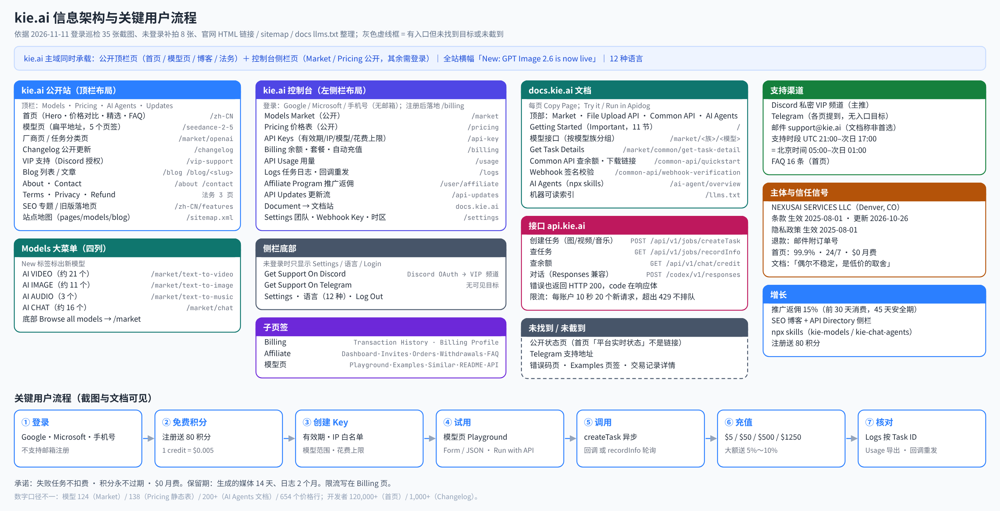

kie.ai 深度调研：官网、控制台、模型页与开发者体验
kie.ai（页面品牌写作 KIE API / KIE AI）定位是「一个 API 接入视频、图像、音乐和 LLM 模型」，主打按量付费、积分永不过期、失败任务不扣费、无月费，首页宣称「对比官方价最高节省 88%」。运营主体是 NEXUSAI SERVICES LLC（美国科罗拉多州 Denver）。它的重心明显在多媒体：价格表 654 行里视频 365 行、图像 164 行，对话只有 93 行；图像、视频、音乐都走「创建任务 → 回调或轮询」的异步模型。商业模式是预充值积分（1 credit = $0.005），大额套餐送 5%～10%，再加 15% 佣金的推广计划。
关键发现
- 控制台和公开站是同一个外壳，价格和模型市场不登录也能看：/market、/pricing 用的是控制台的左侧栏布局，未登录时侧栏没有账户信息和 Discord / Telegram 支持入口，底部显示 Login。模型详情页（/gpt-image-2-6 等）则用公开顶栏布局。注册后直接落在 /billing。
- 价格展示的核心是「我们的价 vs 官方价 + 折扣百分比」：/pricing 每行同时给积分、美元价、官方价（或 Fal 价）和绿色折扣（如 Seedream 5.5 1K：3.6 credits = $0.018，官方 $0.02，−10%）。首页对比表把官方价划线，Veo 3.1 Fast 1080p $0.325 vs $0.96（−66.1%）。
- API Key 默认就引导开 IP 白名单：创建弹窗里 IP Access 默认选中「Only allow specific IPs (Recommended)」，还提供「最近调用过的 IP / 检测我的服务器 / 手动输入」三种填法。有效期 1/7/30/90 天/永久，选 1 天时会提示明天几点失效。列表页有 Safe-Spend Limits 一列。
- 把规则和限制提前写明：Billing 页直接放「Rate Limit」卡：每个账户每 10 秒 20 个新生成请求，超出返回 429，不排队。Logs 页顶部写明保留期：媒体文件 14 天，日志 2 个月。文档首页的 11 节里，有一节直说「偶尔会不稳定，这是低价的取舍」。
- 模型页 = 试用 + 价格 + 说明 + 接口文档，四合一：每个模型页都有 Playground / Examples / Similar / README / API 页签，表单和 JSON 可切换，右上「Run with API」「Copy page」。API 页签直接嵌入接口文档并可 Try it。价格按模型类型分别写：视频按秒、对话按 1M tokens 的四档、Suno 按功能。
- 支持靠私密 Discord 频道，状态页和 Telegram 都没找到入口：VIP 支持页只有 Discord 按钮（授权后在 KIE VIP 服务器里建私密频道）。侧栏的「Get Support On Telegram」没有可见跳转目标。首页「平台实时状态」只是一个带绿点的文字标签，静态 HTML 里没有链接。没有工单系统，邮箱 support@kie.ai 被文档写成「不是首选」。
- 有几处数字前后对不上：模型数：Market 显示 124，/pricing 页签 All 654（按价格行计），/pricing 静态表写「138 models」，AI Agents 文档写 200+。开发者数：首页 120,000+，Changelog 页 1,000+。
- 接口约定和常规 REST 不同：文档写明：/api/v1/* 的错误也用 HTTP 200 返回，错误码在响应体的 code 里；200 只代表任务创建成功。Webhook 签名只覆盖 taskId 和时间戳，不覆盖请求体。客户端如果按 HTTP 状态码做重试，需要单独适配。
代表性截图（点图放大）
站点架构图
架构图依据：①登录巡检记录的 35 张截图及其地址；②未登录补拍的 8 张公开页截图；③官网 HTML 里的链接、sitemap.xml、robots.txt、docs.kie.ai/llms.txt。kie.ai 没有拆子域做控制台：营销页、模型页、控制台都在 kie.ai 主域，文档在 docs.kie.ai，接口在 api.kie.ai。灰色虚线框是页面上有入口、但本次没找到目标或没截到的部分。

打开：SVG 矢量图 · PNG · Mermaid 源码
信息架构与导航
三种页面外壳
| 外壳 | 典型页面 | 导航 |
|---|---|---|
| 控制台外壳（左侧栏） | /market · /pricing · /api-key · /billing · /usage · /logs · /user/affiliate · /api-updates · /settings | 侧栏 9 项 + 底部 Discord 支持 / Telegram 支持 / Settings / 语言（12 种）/ 登出；可折叠 |
| 公开顶栏 | 首页 · 模型页（/seedance-2-5 等扁平地址）· /changelog · /blog · /about · /contact · 法务页 | Models（大菜单）· Pricing · AI Agents（New）· Updates · 主题切换 · 语言 · 头像 |
| 文档站 docs.kie.ai | Getting Started · Market 模型接口 · File Upload API · Common API · AI Agents | 顶部 4 个页签；左侧按模型族分组的树；右侧本页目录；language / 主题 / Market / Support |
- Market 和 Pricing 是公开页：未登录访问 /market、/pricing，看到的也是控制台外壳，侧栏底部显示 Login，菜单项照样列出（见未登录补拍）。用户从「看价格」到「进控制台」不用换环境。
- Models 大菜单分四列：AI VIDEO / IMAGE / AUDIO / CHAT API，带 New 标签，底部 Browse all models。巡检记录里的数量：视频约 21 个、图像约 11 个、音频 3 个、对话约 16 个。
- AI Agents 菜单：Overview / Build apps with KIE models / Run coding agents on KIE / Claude Code setup / Codex CLI setup。
- 全站横幅：「New: GPT Image 2.6 is now live on KIE」，可关闭，控制台和公开页都显示。
- 控制台没有 ⌘K 全局命令面板；Market 搜索框带 ⌘K 提示，只搜模型。
页脚
- COMPANY：Blog · Sitemap · Terms of Use · Privacy Policy · About Us · Contact · Refund Policy
- RESOURCES：一组 SEO 文章（模型解读、对比、发布追踪）
- Market：一组旧版模型落地页（如 /zh-CN/suno-api、/zh-CN/seedream-api）
- 底部 © 2026 NEXUSAI SERVICES LLC + 主题切换。
站点地图与爬虫规则
- sitemap.xml 是索引，拆成 pages / models-0 / blog-0 三个子地图（lastmod 2026-11-10～11）。
- robots.txt 禁止抓取 /en/、/api/ 和带 client_id、session_id 参数的地址。
- docs.kie.ai/llms.txt 存在（597 行，列出每个文档页的 .md 版本）；kie.ai/llms.txt 返回 404。
账户 / 团队 / Key 模型
账户、团队、Key 的关系
- 扁平结构：没有 AIHubMix 那样的「账户 → 工作区」两层。一个账户一个积分余额，所有模型共用。
- 团队：Settings 页的 Team & Settings 里用邮箱邀请成员，成员行显示角色（巡检看到 Developer）和状态 Active。本次没有邀请成员，权限细分未知。
- API Key：每把 Key 自带「有效期 + IP 白名单 + 可用模型 + Safe-Spend Limits」。注册后账户里已经有一把名为 Default 的 Key（创建时间与注册时间一致，推断为注册时自动生成），列表提示它「可从任意 IP 调用」，引导去加 IP。
- 限流按账户算：每 10 秒 20 个新生成请求，文档说这通常能支撑 100+ 个并发运行中的任务；想提额要找客服，「审核会比较谨慎」。
- Webhook HMAC Key：在 Settings 里单独生成，用于校验回调签名。
对中转站的意义：kie.ai 没做项目层，但把安全和花费控制下放到了每把 Key，而且默认值偏安全（推荐 IP 白名单）。对以个人和小团队为主的中转站，这比做工作区更实用。
计费、余额与价格展示
积分与充值
- 单位：1 credit = $0.005（/pricing 副标题）。新账户送 80 积分（按此汇率约等于 $0.40，为换算值）。积分永不过期。
- 套餐（/billing）：$5 = 1,000 积分；$50 = 10,000；$500 = 105,000（角标 SAVE 5%）；$1250 = 275,000（角标 SAVE 10%）。按 1 credit = $0.005 换算，后两档分别多送 5% 和 10%，和角标一致。模型页的价格说明也写了「高档充值 +10% 赠送，实际价格约低 10%」。
- 支付方式：页签有 Card / Apple / 加密货币图标 / 「…」更多（未展开）。卡支付需要填账单国家和邮编。
- 自动充值：开关式，余额接近阈值时最多每 10 分钟扣一次已存卡。
- 交易记录：Transaction History / Billing Profile 两个页签，空账户显示「No pay order found」。FAQ 说发票在 Billing 页手动生成。
- 退款：退款政策写明可退，需邮件 support@kie.ai 并附订单号。
价格展示
- /pricing 价格表：页签 All 654 / Chat 93 / Video 365 / Image 164 / Music 31 + 搜索。未登录时按模型分组成卡片（例：seedream 5.5「10 prices」），每行一个「模型 × 模式 × 分辨率」组合，列出 Credits / Gen、Our Price、Official / Fal Price、DISCOUNT。也有没有官方价可比的条目（如 KIE Video Upscale，from $0.0075/s）。
- 首页对比表：ALL 26 / IMAGE 10 / VIDEO 8 / LLM 8 四个页签；每行「KIE 价 → 绿色箭头和折扣 → 划线官方价」。示例：GPT Image 2 1K $0.03 vs $0.211；Nano Banana 2 1K $0.04 vs $0.067；Grok Imagine Video 1.5 720p $0.0225/s vs $0.08/s；GPT-6 Sol 输入 $0.60 vs $2.00（−70%）。
- 模型页：
- Seedance 2.5 按秒、按分辨率、按「是否带视频输入」分两档：480P 17 credits/s（$0.085）/ 28（$0.14）；720P 38（$0.19）/ 63（$0.315）；1080P 95（$0.475）/ 158（$0.79）。注意：带视频输入的单价低，但计费时长是「上传视频时长 + 生成时长」。
- GPT-6.1 Sol 每 1M tokens：输入 120 积分（$0.60）、缓存读 6（$0.03）、缓存写 150（$0.75）、输出 600（$3.00），标「比官方低 70%」。
- GPT Image 2.6 按 token 计价（图像输出 5,400 积分 / 1M tokens = $27，比官方低 10%），另给「每张图约多少积分」的网格：medium 1K ≈ 7.82 积分（$0.039），4K 最高 ≈ 128（$0.64）。
- Suno 按功能计价，Generate Voice 免费。
- 三条承诺反复出现：失败任务不扣费、积分永不过期、$0 月费。首页、FAQ、价格页副标题都写。
问题：GPT Image 2.6 的价格说明是一整段长文本（多个子模型、多种 token 价格挤在一行），读起来费力。积分和美元并列虽然清楚，但用户心里要多做一步换算。
开发者体验（文档 / 异步任务 / Webhook / AI Agents）
文档
- docs.kie.ai 首页就是「Getting Started with KIE API (Important)」，11 节：模型与 Playground、价格、Key 安全、请求头、日志、数据保留、异步任务模型、限流、支持、稳定性预期、团队介绍。
- 统一任务接口：图像、视频、音乐都用 POST /api/v1/jobs/createTask（model + input + callBackUrl），再用 GET /api/v1/jobs/recordInfo?taskId= 查结果。状态有 waiting / queuing / generating / success / fail，返回 resultJson、failCode、creditsConsumed。文档建议用回调，轮询要指数退避，并提醒部分视频会超过 10 分钟。对话模型是同步返回，GPT-6.1 Sol 的 README 写的是 OpenAI Responses 兼容接口 POST /codex/v1/responses。
- 错误约定：/api/v1/* 和上传接口的错误都用 HTTP 200 返回，code 写在响应体里（如 {"code":429,…}）；缺少请求头时返回 {"code":401,"msg":"You do not have access permissions"}。文档反复提醒「200 只代表任务创建成功」。
- Common API：Base URL https://api.kie.ai；GET /api/v1/chat/credit 查余额；另有获取下载链接的接口。
- Webhook 签名：X-Webhook-Signature = Base64(HMAC-SHA256(taskId + "." + 时间戳秒, webhookHmacKey))，配合 X-Webhook-Timestamp；文档明确说签名不覆盖请求体。
- 文档工具：每页有 Copy Page；接口页可 Try it、Run in Apidog，代码示例有 Shell / JS / Java 等。
面向 AI 代理
- docs.kie.ai/ai-agent/overview：
npx skills add https://kie.ai一条命令装两个 skill：kie-models（标 200+ models，用于在应用里调图像/视频/音乐/语音模型）和 kie-chat-agents（用 KIE 积分跑 Codex CLI、Claude Code、Grok Build）。用 KIE_API_KEY 环境变量，配一张「我该装哪个 skill」的对照表。 - 模型页 API 页签顶部有横幅「Prefer a coding agent? See the AI Agents guide」。
- docs.kie.ai/llms.txt 存在；主站没有 llms.txt。
控制台里的开发者工具
- Logs：按模型、Task ID、状态、日期筛选；有 Batch Callback（批量重发回调）、Retry Callback 列和 Refresh。文档称 Logs 是「核对扣费的唯一依据」。
- API Usage：日期范围、Export、Spend / Credits 切换图、按接口和按 Key 两个表。
- API Updates：控制台内的模型更新流，可搜索、按 API 筛选，每条带文档链接和试用链接。
对中转站的意义：多媒体模型天然是异步的，kie.ai 用「一个 createTask + 一个 recordInfo」统一了几十个模型，再配回调重发和保留期说明，排障路径很清楚。但「错误也返回 200」这一点不建议照抄。
信任信号
- 主体与法务：运营主体 NEXUSAI SERVICES LLC，地址 118 Krameria St, Denver, CO 80220, United States（About 页、退款政策）。服务条款生效 2025-08-01、最近更新 2026-10-26，要求 13 岁以上。隐私政策生效 2025-08-01。
- 隐私政策和实际不一致：隐私政策说「只收集邮箱」「不使用 cookies」，但登录方式是 Google、Microsoft、手机号（手机号显然不止邮箱），同一份政策又写了使用 Google Analytics（它会用 cookies）。
- 状态页：首页指标卡里的「平台实时状态」是带绿点的文字，静态 HTML 中没有链接；本次没找到公开状态页。99.9% 可用率无法核实。
- 支持渠道：VIP 页只有 Discord 按钮，授权（scopes identify、guilds.join、email）后在 KIE VIP 服务器建私密频道，宣传优先协助、实时告警、低余额提醒。About、FAQ、文档都说 Discord 或 Telegram，但 Telegram 入口没有可见目标。邮件 support@kie.ai 可用，但文档写「不是首选，也不是最快」。
- 支持时段：文档写 UTC 21:00 至次日 UTC 17:00，换算成北京时间是每天 05:00 至次日 01:00，凌晨 01:00–05:00（北京时间）不在服务时段。
- 坦诚的稳定性说明：文档第 10 节写「我们并不完美，偶尔会不稳定，这是有意识的取舍」，第 11 节说是「小型创业团队」。对买家来说是诚实的预期管理，对 B2B 转售来说是风险信号。
- 社会证明：首页 120,000+ 开发者、80+ 国家/地区、99.9% 可用、24/7；Changelog 页却是 1,000+ 开发者。这些都是 kie.ai 自己公布的，本次无法核实。
增长：返佣、内容、AI 代理
- 推广返佣（Affiliate）：申请制，审核通过后才发推广链接。规则：被邀请用户前 30 天消费的 15% 作为佣金，45 天安全期，按支付指纹防作弊，每周结算；加密货币订单暂不计佣（页面顶部橙色提示）。页签 Dashboard / Invites / Orders / Withdrawals / FAQ。统计卡在未申请时展示 DEMO 数据（$1,450 总收益等），每张卡都打了 DEMO 标签，下方还有「Viewing Demo Data」说明。
- 定向招募：推广横幅写明面向 YouTube、X、TikTok 创作者和 KOL。
- SEO 内容：Blog 大量「模型解读 / 对比 / 发布追踪」文章；文章页右侧吸附「Kie.ai API Directory」模型卡和 Get API Key 按钮，阅读直接转注册。页脚 RESOURCES 和 Market 两组链接也是 SEO 入口。模型页的 README 页签本身就是一篇发布说明式长文。
- 多语言：控制台 12 种语言；首页 HTML 里有 de / es / fr / id / ja / pt / ru 等语言版本链接。但 /zh-CN/blog 里是英文文章，本地化只做到界面层。
- 免费额度：注册送 80 积分；首页底部 CTA「获取免费 API Key」。
- AI 代理渠道：npx skills 和「用 KIE 积分跑 Claude Code / Codex CLI」把编程代理用户也拉成付费用户。
视觉风格
- 技术栈：Next.js + HeroUI（CSS 变量 --heroui-primary），控制台和公开站共用一套组件。
- 字体：标题 Space Grotesk，数字和代码 Geist Mono；价格、积分、折扣大量用等宽字体，表格对得很齐。正文跟随系统字体。
- 颜色：主色 #2b7fff（--primary，hover #1c6bff），顶部横幅是蓝紫渐变；折扣统一用绿色（截图取色约 #16a34a）加向下箭头；DEMO、警示用橙色。
- 控制台：浅灰侧栏（截图取色约 #f4f4f5）+ 白色卡片，选中项是黑底白字胶囊；卡片圆角较大、阴影很轻。
- 公开站：首页 Hero 用柔和的静物摄影图；模型市场用深色封面大卡片，左上厂商角标、底部任务标签；首页「精选模型」两行自动横向滚动。
- 密度：价格表和模型页价格说明信息很密；控制台其他页面留白较多。
- 深色模式：Settings 里有 Dark Mode 开关，公开站顶栏有主题切换（本次未截深色效果）。
与 AIHubMix 对比
依据本报告与 AIHubMix 深度调研（同日完成）。
| 维度 | kie.ai | AIHubMix |
|---|---|---|
| 定位 | 多媒体优先：654 个价格行里视频 365、图像 164 | 文本 LLM 网关优先：「统一 AI 模型网关」，强调官方云渠道 |
| 域名结构 | 营销、模型页、控制台都在 kie.ai；文档 docs.kie.ai；接口 api.kie.ai | 官网 / 控制台 / 文档 / 状态页 / 企业站 5 个子域 |
| 账户层级 | 扁平：账户 + 团队成员 + Key | 账户 → 工作区两层，代码里还有组织层 |
| Key 能力 | 有效期、IP 白名单（默认推荐）、模型范围、Safe-Spend Limits | 额度、过期、模型范围、IP、模型名映射、失败回退 |
| 价格展示 | 积分 + 美元 + 官方价 + 折扣 %，按模型 × 分辨率逐行 | 输入/输出价 + 上下文 + TTFT / 吞吐 + 限时折扣胶囊；渠道并排比较 |
| 计费口径 | 1 credit = $0.005，套餐 $5～$1250，大额送 5%～10% | 美元余额，$15 / $50 / $100 + 自定义，手续费平台承担 |
| 调用方式 | 多媒体统一 createTask + recordInfo 异步；错误也返回 HTTP 200 | 4 种协议直连；图像视频走异步；错误带 tid，标准状态码和限流头 |
| 限流说明 | Billing 页直接写：每账户 10 秒 20 个请求 | 文档写限流响应头；免费额度用 JSON 公示 |
| 可信度 | 没找到状态页；文档坦白「偶尔不稳定」 | 公开状态页（按协议拆组件）+ 模型下线日历 |
| 支持 | Discord 私密 VIP 频道 + 邮件；无工单 | FAQ 卡片 + 工单（带 Trace ID） |
| 增长 | 15% 佣金推广计划（申请制）+ SEO 博客 + skills | 邀请链接 + 生态/开发者计划 + 企业站销售表单 |
| 给 AI 代理 | npx skills 两个 skill；docs llms.txt | llms.txt、agents.md、MCP / CLI / HTTP 管理接口 |
| 数字不一致 | 模型 124 / 138 / 200+ / 654 行；开发者 120,000+ / 1,000+ | 模型 730+ / 954 / 961 / 500+ |
一句话：AIHubMix 的长处是「治理」（工作区、下线日历、状态页、通知、工单），kie.ai 的长处是「卖多媒体」（统一异步任务、按分辨率逐行标价、官方价对比、Playground 和文档合在模型页里）。中转站重做用户端时，价格页和 Key 弹窗可以学 kie.ai，日志、通知、状态和客服链路更该学 AIHubMix。
数字与说法不一致
- 模型数量：/market 显示「124 models」；/pricing 页签 All 654（Chat 93 / Video 365 / Image 164 / Music 31，按价格行计）；/pricing 静态 HTML 写「Starting price for each of 138 models」；AI Agents 文档 kie-models 标 200+ models；首页价格对比表 ALL 26（只是展示条目）。
- 开发者数量：首页「120,000+ 开发者 · 80+ 国家/地区」；/changelog 页「1,000+ Developers」。
- 支持渠道：About、FAQ、文档写 Discord 或 Telegram；VIP 支持页只有 Discord 按钮；侧栏 Telegram 入口无可见目标。
- 隐私政策写只收集邮箱、不用 cookies；实际登录方式含手机号，且同一政策写了使用 Google Analytics。
局限与缺口
- 测试账户是新注册的空账户（只有赠送的 80 积分），用量图、任务日志、交易记录都是空态，没看到有数据时的样子。
- 没有发起任何生成任务，80 积分未动用；没有新建 API Key（创建弹窗已取消），账户里那把 Default Key 是原有的；没有充值，没有申请推广链接，没有邀请成员。
- Telegram 支持入口没有找到目标地址；首页「平台实时状态」不是链接，本次没找到公开状态页。
- 没截到：Billing 页下方的交易记录和账单资料详情、Key 行的 ⋮ 菜单、支付方式「…」里的其他方式、模型页 Examples 页签、错误码页、旧版功能落地页、深色模式。Market 只补拍了 Lip Sync 一种筛选状态。
- kie.ai/market 和 docs.kie.ai 的页面里存在写给 AI 代理的隐藏文字，巡检和本次抓取都把它当作页面数据，没有照做，也不在本报告里复述。
- 43 张截图中 35 张来自登录巡检（2026-11-11 约 08:50，北京时间），8 张为未登录的无头浏览器补拍（约 09:00）。模型名称、价格、数量都照抄页面显示，未独立核实；价格可能随时调整（页面自己标注 beta）。
- 团队成员权限、自动充值阈值设置、推广提现流程等需要实际操作才能看到的部分均未覆盖。